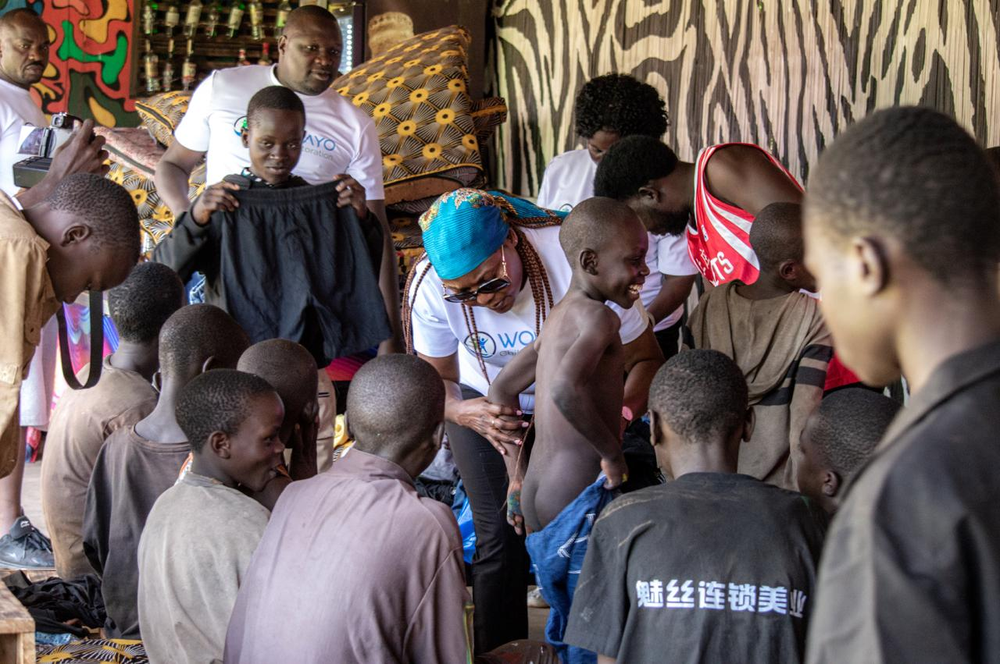

Through the lens
Programs in action
Real moments from education, health, mentorship, and outreach across the communities we serve.

Shared meals, shared dignity

Care where it is needed most

Presence that heals

Tools for a fresh start